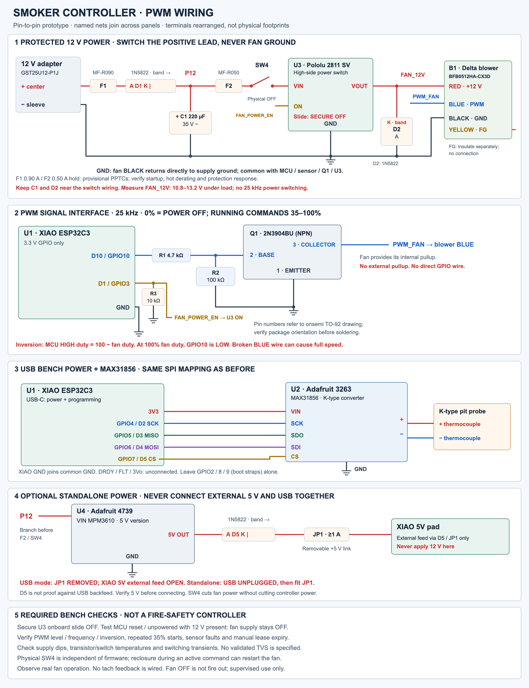

The idea
I want to build a small device that can help hold a charcoal or wood smoker at a target temperature. The basic idea is simple: measure the air temperature inside the smoker, control the amount of combustion air with a blower, and make the current state visible over a local Wi-Fi page.
This is not meant to be a gas-valve controller or a mains-powered heater. It is a combustion-air controller that adds air when the fire needs help and stops adding air when it does not. The fire still has thermal inertia and natural draft, so turning the fan off cannot make the temperature drop immediately.
The first build
I am deliberately starting with assembled development boards instead of jumping straight to a custom PCB. The first bench prototype is built around five main pieces:
- A Seeed Studio XIAO ESP32-C3 for the control logic, Wi-Fi, and local web interface.
- An Adafruit MAX31856 breakout to read an ungrounded K-type thermocouple.
- A Delta BFB0512HA-CX3D four-wire, 12 V PWM blower with separate power, control, and tach leads.
- A Pololu 2811 high-side switch for default-off fan power, plus a small 2N3904 transistor interface for the blower's PWM input.
- A small 5 V buck converter to power the XIAO when the prototype moves from separate USB and 12 V supplies to one 12 V adapter.
The modules keep the early work focused on the parts that are hardest to get right: choosing a blower, understanding its startup behavior, getting reliable temperature readings, and deciding how the control loop should behave. A solderless breadboard is fine for signals, but the fan current will stay in properly sized wiring and connectors rather than passing through breadboard contacts.
How the pieces fit together
The updated design uses a documented four-wire blower rather than trying to PWM an arbitrary two-wire motor. A regulated 12 V supply feeds the blower through the Pololu 2811 high-side switch. The blower's black lead stays on the common supply ground, while the switch controls only its red positive lead. A separate maintained disconnect in that positive path provides a physical way to remove fan power.
Speed is controlled on the Delta's blue lead at 25 kHz. The XIAO's GPIO10 drives a 2N3904 open-collector interface, which uses the blower's internal pull-up and inverts the signal: the requested percentage is the blue lead's HIGH-time percentage, not RPM or airflow. The initial command range is 0% or 35–100%; values from 1–34% are rejected instead of pretending the blower can reliably start there. The fan supply remains steady while speed changes.
The yellow FG/tach lead is individually insulated and left unconnected for this version. That keeps the interface explicit: a command is not proof that the fan is turning, and this prototype does not claim RPM, stall, or airflow feedback.

Safety is part of the design
The first firmware delivery is a supervised local-network manual controller, not an autonomous thermostat. Every nonzero command carries an expiring lease, so a disconnected client cannot leave the fan running indefinitely. A future automatic control session can continue locally through Wi-Fi loss, but network requests must never block sensing or shutdown.
The intended default is fan off. GPIO3 controls the Pololu power switch and has a pulldown; the switch's onboard slide must be secured OFF so reset, brownout, and an unpowered MCU do not enable the fan. The firmware should remove fan power for an open probe, converter fault, stale measurement, overtemperature, expired lease, or STOP command. A separate physical disconnect remains useful if software is broken. These measures do not make this a certified unattended safety controller; the circuit is still a design proposal that requires bench measurements.
From prototype to PCB
Once the blower and sensor behavior are understood, the next step is a small carrier board around the XIAO ESP32-C3, MAX31856 breakout, high-side power switch, PWM transistor interface, and protection components. The layout matters as much as the schematic: the thermocouple connector and converter need a quiet, thermally stable area, while the fan current and switching loops need short, deliberate power paths. The antenna also needs its keepout, especially if the electronics eventually live near a metal smoker.
The board is not the whole system. The selected Delta is a compact 50 × 50 × 10.3 mm blower rated at 0.12 A nominal and 0.18 A maximum, but its published 3.53 CFM rating is at zero static pressure. The actual duct, damper, smoker restriction, enclosure, probe, wiring, fuses, and power supply all need to be checked against the installation rather than inferred from the nominal number.
What I am trying to learn
The project is as much about learning the boundary between software and hardware as it is about making a useful smoker accessory. I want to measure the real electrical behavior instead of trusting nominal current ratings, understand how fan switching affects temperature readings, and find a control strategy that behaves sensibly around lid openings, fuel changes, and the slow response of a smoker.
The build sequence is intentionally conservative: verify the sensor and PWM interface on the bench, then test explicit manual commands and lease expiry, then evaluate temperature control only if the measurements justify it. Before any supervised smoker trials, I need to test probe failures, resets, power cycling, Wi-Fi loss, fan startup, PWM levels, supply transients, and cases where a sensor can return a plausible but incorrect reading.
For now, this is a design proposal rather than a finished product. The first milestone is not a polished PCB—it is a small, well-understood prototype that can control airflow predictably and fail with the fan power off.